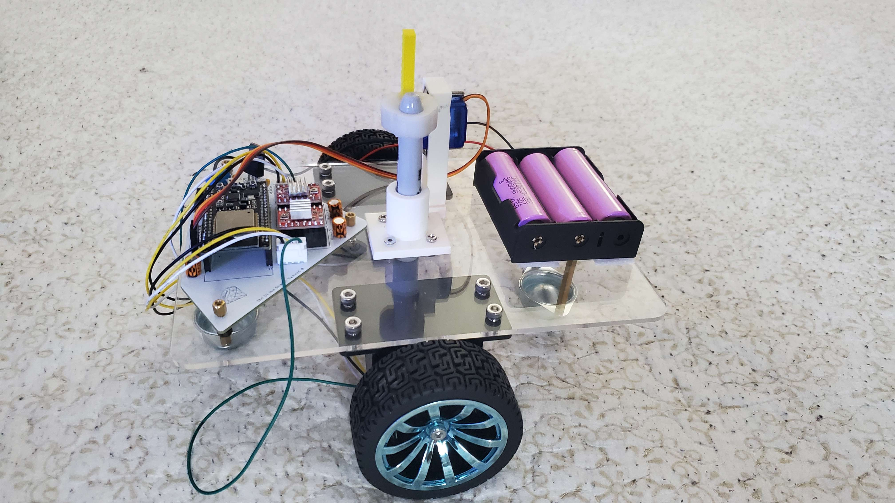
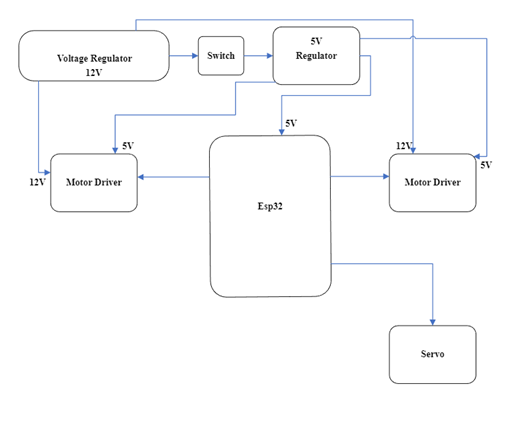
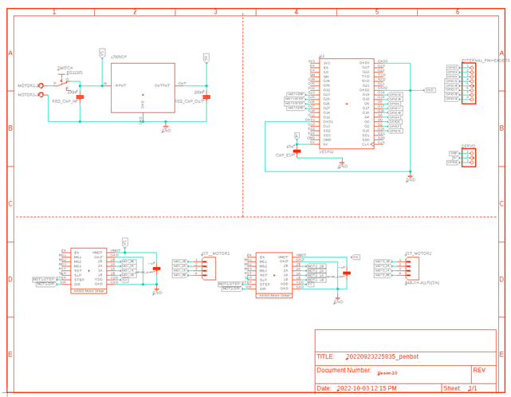
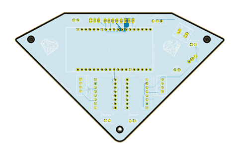

Introducing Draw IO, a cutting-edge drawing robot that allows users to bring their creative visions to life. With its precise movement controls, 3D rotation capabilities, and versatile servo motor, Draw IO empowers users to create intricate designs with ease. Whether you're an artist, designer, or hobbyist, Draw IO is the perfect tool for turning your ideas into reality.

The first step in the project plan will be to conduct market research to determine the needs and preferences of the target market. This will include surveying potential customers, analyzing competitors, and collecting other relevant data. Based on this research, I developed a detailed product specification that describes the robot's features and functionality.
Phase 1: Understanding
Understanding all components 01-Sep-22 - 10-Sep-22
Phase 2: PCB Design
Make schematic 01-Sep-22 - 15-Sep-22
Design PCB 15-Sep-22 - 30-Sep-22
Phase 3: Component Procurement and Design
Buy all needed parts 24-Sep-22 - 25-Oct-22
Testing the parts 25-Oct-22 - 01-Nov-22
Design 3D assembly 20-Oct-22 - 15-Nov-22
Phase 4: Assembly
Build the robot 01-Nov-22 - 08-Nov-22
Phase 5: Testing
Write the code 08-Nov-22 - 01-Dec-22
Test the robot 01-Dec-22 - 07-Dec-22
Block Diagram

Build Of Materials
Name
Unit price($)
Qty
Price($)
Lithium Ion
5
3
15
Sharpy
2
3
6
Battery holder
1.37
1
1.37
PCB
5
26
TIRE-53
4.6
2
9.2
Coupler-3X5
3.4
2
7.6
Stepper kit
28
1
28
Stand off and screws
30
1
30
Regulator
0.65
5
3.25
Screw terminal
6
1
6
Acrylic
free
A4988
20
5
100
ESP32
10
1
10
Servo
Free kit
3D printed Items
5
5
25
Battery charger
15
1
15
Jst headers kit
20
20
Caliper
23
1
23
Ball caster
1.53
2
3.06
Screw driver kit
14
14
TOTAL AMOUNT
262.42$
Schematic
The below schematic illustrates the component connections utilized in the Draw IO system. It features a L7805 voltage regulator, two motor drivers for controlling the stepper motor, which is connected to the ESP32 microcontroller, as well as two JST headers. Additionally, the schematic includes a pinout for the servo motor and a screw terminal for the input power, which is connected to a switch and additional pin headers for versatile creative implementation. The ESP32 microcontroller is utilized to connect and control the two stepper motors and a servo motor.

Design PCB

Harware
I procured all necessary mechanical components for the project, including an ESP32 microcontroller, motor drivers, stepper motors, capacitors, switch, voltage regulator, screw terminals, socket headers, a servo motor, wiring, stepper brackets, couplers, acrylic materials, and 3D printed components. I also acquired Lithium-Ion batteries, standoffs, and various sizes of M3 and M4 screws.
Testing
I successfully implemented stepper motor functionality in the prototype by programming the ESP32 microcontroller to control the motor drivers and interfacing with the stepper motors via GPIO pins.
To assemble the Drawbot, I began by attaching the stepper motors to the brackets using the couplers. Next, I mounted the servo motor to the base of the robot and connected it to the ESP32 microcontroller. I then connected the motor drivers to the stepper motors and the ESP32, ensuring a secure and stable connection. After that, I assembled the voltage regulator and the screw terminal, and wired them to the power input switch. I also connected the socket headers and the wire connections to the ESP32. Finally, I mounted the acrylic and 3D printed parts on the robot and connected the Lithium-Ion batteries to the battery holder. The robot was now ready for testing and final adjustments.
Software
The prototype was developed utilizing the Arduino software platform. Subsequently, the MicroPython programming language was utilized on the Thonny IDE to fine-tune the functionality of the robot. Custom libraries were created to handle the stepper motor movements, servo motor control, and the ability to draw pre-determined images. These libraries greatly enhanced the overall performance and efficiency of the robot.
MycroPython Code
Stepper Code
from machine import Pin #import pin module for esp32
import time
from time import sleep_us #import delay in us time.sleep_us(1000) Delay for 1ms
#from time import sleep_ms #import delay in ms
from Servo import*
#from machine.stepper import Stepper
# Set up the stepper motor with the appropriate number of steps per revolution
# and the appropriate pins for controlling the stepper motor
#stepper = Stepper(200, Pin(0), Pin(2), Pin(4), Pin(5))
'''
The Movement of the robot
The ciconference of the wheel is 65mm diameter
Funnction: π *Diameter= π*54=204.2mm
Steps per revolution is 200 steps
So for 200steps the Ratio of steps is 200/204.2= 0.979 steps/mm
If we want a certain direction, we just need to do distance * 0.979 steps/mm
In simple term, This formula converts the distance in millimeters to the number of steps required
to move that distance based on the ratio of steps per millimeter specified in the code as 0.979 steps/mm
'''
''' Implementing Macros'''
CW = 1 #clockwise
CCW = 0 #anti-clockwise
High = 1
Low = 0
F_step = 200 #step per revolution
Circ_wheel = 204.2 #circonference of the wheel
''' Assigning the output For the motor driver and esp32'''
M2RDir = Pin(33, Pin.OUT) #Direction pin to GPIO33
M2RSTEP = Pin(25, Pin.OUT) #Step pin to GPIO23
M1LDir = Pin(27, Pin.OUT) #Direction pin to GPIO27
M1LSTEP = Pin(26, Pin.OUT) #Step pin to GPIO26
'''Define the steps and the speeds for the right motor'''
def MvRMotor(steps, speed, Dir):
if Dir == CCW or Dir == CW: #If Dir is = 0 or 1
M2RDir.value(Dir) #Set Dir to CW or to CCW
for i in range(steps): #Step for the number of specified steps
M2RSTEP.value(High) #Step is HIGH
sleep_us(speed)
M2RSTEP.value(Low) #Step is LOW
sleep_us(speed)
# Disable the coil after the step is executed
M2RSTEP.value(Low) # Disable the coil after the step is executed
'''Define the steps and the speeds for the left motor'''
def MvLMotor(steps, speed, Dir):
if Dir == CCW or Dir == CW: #If Dir is = 0 or 1
M1LDir.value(Dir) #Set Dir to CW or to CCW
for i in range(steps): #Stepa for the number of specified steps
M1LSTEP.value(High) #Step is HIGH
sleep_us(speed)
M1LSTEP.value(Low) #Step is LOW
sleep_us(speed)
M1LSTEP.value(Low) # Disable the coil after the step is executed
'''Going Forward with the robot'''
def Forward(Distance):
Step_per_mm = F_step / Circ_wheel #Ratio of the step 0.979 steps/mm
Steps_Convertion = round(Distance * Step_per_mm) #convert to integer value
for i in range(Steps_Convertion):
MvLMotor(High, 5000, CCW)
MvRMotor(High, 5000, CW)
'''Going Backward with the robot'''
def Backward(Distance):
Step_per_mm = F_step / Circ_wheel #Ratio of the step 0.979 steps/mm
Steps_Convertion = round(Distance * Step_per_mm) #convert to integer value
for i in range(Steps_Convertion):
MvLMotor(High, 5000, CW)
MvRMotor(High, 5000, CCW)
'''Turn Right with the robot'''
def TurnRight(Distance):
#Step_per_mm = F_step / Circ_wheel #Ratio of the step 0.979 steps/mm
Steps_Convertion = round(Distance * 0.979) #convert to integer value
for i in range(Steps_Convertion):
MvLMotor(High, 5000, CCW)
MvRMotor(High, 5000, CCW)
'''Turn Left with the robot'''
def TurnLeft(Distance):
Step_per_mm = F_step / Circ_wheel #Ratio of the step 0.979 steps/mm
Steps_Convertion = round(Distance * Step_per_mm) #convert to integer value
for i in range(Steps_Convertion):
MvLMotor(High, 5000, CW)
MvRMotor(High, 5000, CW)
Servo Code
from machine import Pin, PWM
servo = PWM(Pin(0), freq=50) #set pwm and pin
def SharpieDown(): #20 duty cycle is 180 degree
servo.duty(18)
def SharpieUp():
servo.duty(30)
The image above displays a diagram which shows the component of the robot. The robot has a PCB board which is the main circuitry for the robot to function, 1-point fins Sharpy, 1 Battery holder which has 3 slots for batteries, 2 Ball caster, 2 Wheels, 2 stepper motors with 2 brackets, 1 servo motor, 1 custom 3D printed Servo holder and 1 3D printed pend holder and 2 3D printed for the movement of the servo and the Pen.
Product Usage
Powering ON/OFF
To start using the Robot, our developers implemented a switch on the PCB. This will help the user to turn on the Robot just by sliding the switch toward the right.
Pen Requirements
The pen which perfectly works whit this robot is a point fin Sharpy or any other marker that must be 12 mm or 1.2 cm can be used for Draw IO. In addition to that, the tip of the sharpy or the marker must be 11mm or 1cm of diameter. This is to implement the custom 3D printed ring to hold the pen.
Also pen work better if its room temperature. If you use a sharpy that was kept in cold, the sharpy ink is frozen and its wont draw anything. Therefore, make sure always the sharpy work before using your Draw IO.
How to make the Robot draw
First put the back side of the Sharpy in the ring 3D printed piece. Use pressure for the piece to be properly placed. The servo holder 3D printed must be in place and the servo motors horn must have been screen with the circle teeth 3D printed part. Then remove the cap of the sharpy and place the sharpy from the bottom of the robot. Press the straight-line teeth 3D printed on the ring 3D print object after. Then the robot is built with a software, where every time you slide the switch, the robot will draw an image. The final assembly of the of the pen must look like the image on the left margin. Then place a paper on the ground and it is recommended to add tape on each corner, so the paper is in fixed position. Then place your Draw IO on the paper and slide the switch. The most important part is the handling of the robot. We recommend our user to do one action at a time, to prevent any damage to the parts of the robot.
Environment setup for intended use
The environment the robot is place is crucial since minor action or movement can lead to the disfunction of the robot. The sharpy when cap Is placed, then the Robot must have structure on both sides to uplift the robot 2cm from the ground. The purpose of the support is not pushed the sharpy to dept on the 3D printed servo holder. The room temperature is also important. If you bring your robot outside during winter, even with covering, the sharpy ink will freeze. Therefore, try to keep the robot inside at all moments. For the solution of frozen ink, its mention on the pen requirement. Use the Robot on flat surface that’s able to move the wheel properly. Such example is wood, plastic sheet, carboard, etc. Do don’t use on table mat, it triggers the wheel and make it not function properly. Also use the Draw IO on low ground to prevent high fall to break the robot.
Safety Info
Do not have any water cup near the robot
Do not bring it outside when snowing
Do not movement the robot in fast movement
Keep it safe area with the extra support
Off the robot if it gets overheated
Do not throw the robot around, gently place it on the surface
Do no keep the cap open too long, it can dry up the ink
DO NOT POWER THE BATTERY AND PLUG USB TO YOUR ELECTRICAL DEVICEE AT THE SAME TIME
Hazard Info
This robot is for people over the age of 13+.
Keep away from children view and near babies.
This Robot is intended for people who would like to advance their experience in Engineering. Kids will thing is their regular toy, therefore, their possibility they can put the power cable on the mouth or chew on the wire. Most components are very small, if swollen, call for emergency (911) immediately. Also, there a possibility it can electrocute if not taken properly. Therefore, avoid any contact with children. In addition, the motor driver and stepper get hot during the process of the robot. Avoid any skin contact on theses part. Turn off the switch after usage.